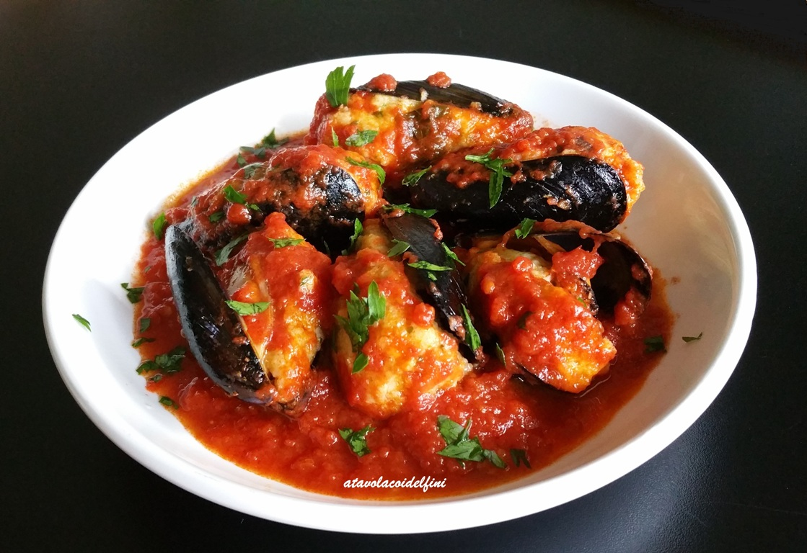

Cozze Ripiene

Le cozze ripiene al sugo di pomodoro sono una vera delizia per gli amanti delle cozze: il sapore intenso della cozza si
sposa con un ripieno morbidissimo di uova, che viene poi ulteriormente esaltato dalla bontà del sugo di pomodoro!
E’ un piatto che io adoro e che ho scoperto relativamente da poco: l’ho assaggiato per la prima volta a casa di mia suocera e da allora me ne sono innamorata!
Quando siamo a pranzo da lei, le cucina spesso, perchè sa che a me piacciono e me ne mangerei a bizzeffe! 😀
Così, mi sono fatta spiegare come le prepara ed eccomi qui a condividere la ricetta con voi!
Pan Cotto

Le orecchiette con le cime di rapa, chiamate anche “recchitelle” o “strascinati”, sono uno dei piatti tipici più rappresentativi della Puglia,
in special modo della provincia di Bari, senza dubbio una delle più amate ricette con le cime di rapa. Questo primo piatto si prepara in tutta la regione,
anche con accompagnamenti diversi dalle cime di rapa come per esempio broccoli o sugo di pomodoro. Il segreto di questo piatto sta proprio nella cottura ottimale
delle verdure con la pasta, l’esperienza e la conoscenza delle materie prime consentono di ottenere un piatto perfetto. Nel rispetto della tradizione lo Chef Fabio
Abbattista le ha cucinate per noi realizzando le orecchiette fatte in casa di semola di grano duro, cotte in acqua bollente insieme alle cime di rapa per assorbirne meglio
gli aromi, mantecate con un saporito soffritto a base di acciughe sott’olio e profumato con uno spicchio di aglio. Le orecchiette con le cime di rapa sono un piatto della
tradizione contadina, semplice ma con un gusto unico che nasce dall’unione di sapori decisi, che si ispirano alle cime di rapa in padella, un contorno rustico tradizionale.
Se amate le ricette genuine, venite a scoprire altre prelibatezze pugliesi come il pancotto del Gargano o le friselle.
Orecchiette alla Cime di Rapa

Le orecchiette con le cime di rapa, chiamate anche “recchitelle” o “strascinati”, sono uno dei piatti tipici più rappresentativi della Puglia,
in special modo della provincia di Bari, senza dubbio una delle più amate ricette con le cime di rapa. Questo primo piatto si prepara in tutta la regione,
anche con accompagnamenti diversi dalle cime di rapa come per esempio broccoli o sugo di pomodoro. Il segreto di questo piatto sta
proprio nella cottura ottimale delle verdure con la pasta, l’esperienza e la conoscenza delle materie prime consentono di ottenere un piatto perfetto.
Nel rispetto della tradizione lo Chef Fabio Abbattista le ha cucinate per noi realizzando le orecchiette fatte in casa di semola di grano duro, cotte in acqua bollente
insieme alle cime di rapa per assorbirne meglio gli aromi, mantecate con un saporito soffritto a base di acciughe sott’olio e profumato con uno spicchio di aglio.
Le orecchiette con le cime di rapa sono un piatto della tradizione contadina, semplice ma con un gusto unico che nasce dall’unione di sapori decisi,
che si ispirano alle cime di rapa in padella, un contorno rustico tradizionale.
Se amate le ricette genuine, venite a scoprire altre prelibatezze pugliesi come il pancotto del Gargano o le friselle.